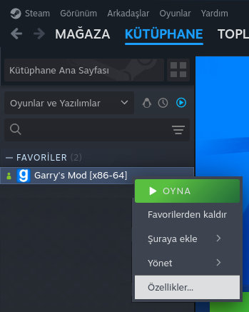
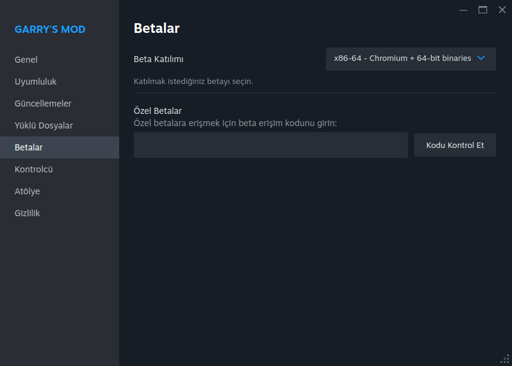

Chromium Nedir? Nasıl Chromium Geçerim?
Normalde Garry's Mod, 32-bit bir uygulama olarak çalışıyor. Ancak bu beta, 64-bit sistemler için optimize edilmiş. 64-bit sürüm, daha fazla bellek kullanımı ve daha iyi performans sunuyor, bu da büyük haritalar ve çok fazla eklenti ile daha stabil bir oyun deneyimi sağlıyor.
|  |
|
|  |
|